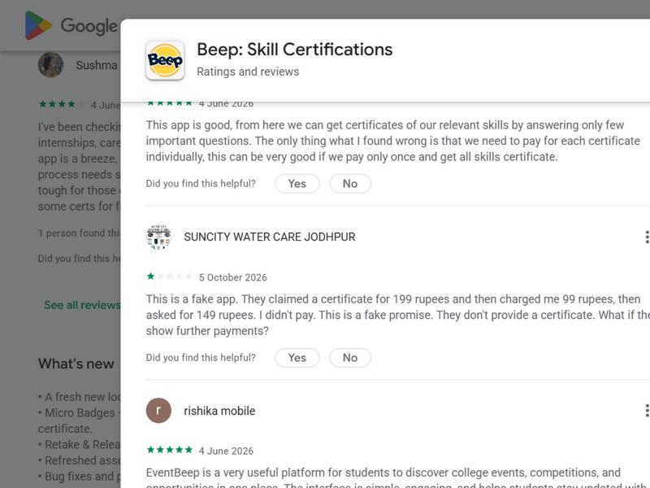
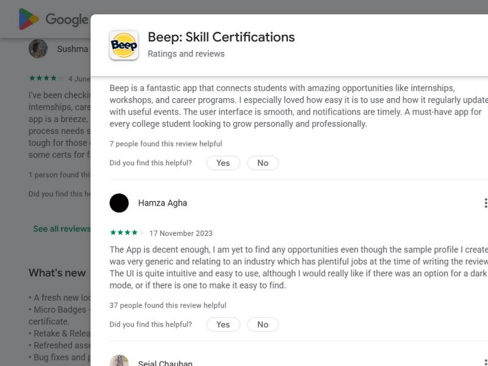
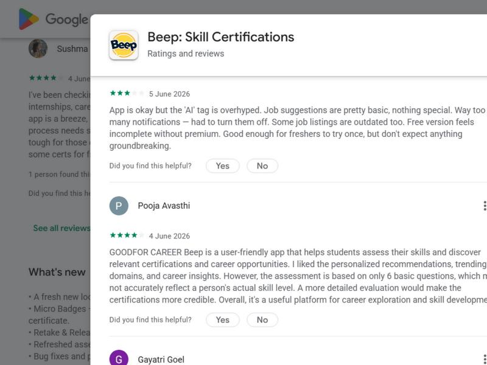
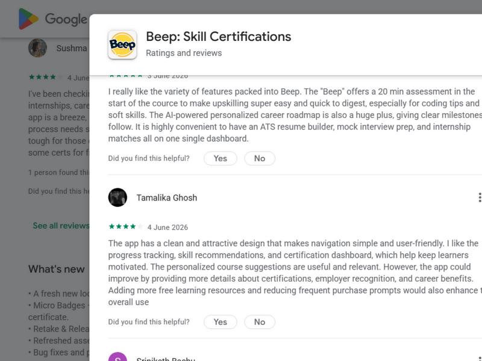
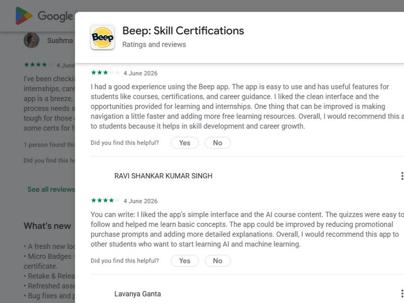
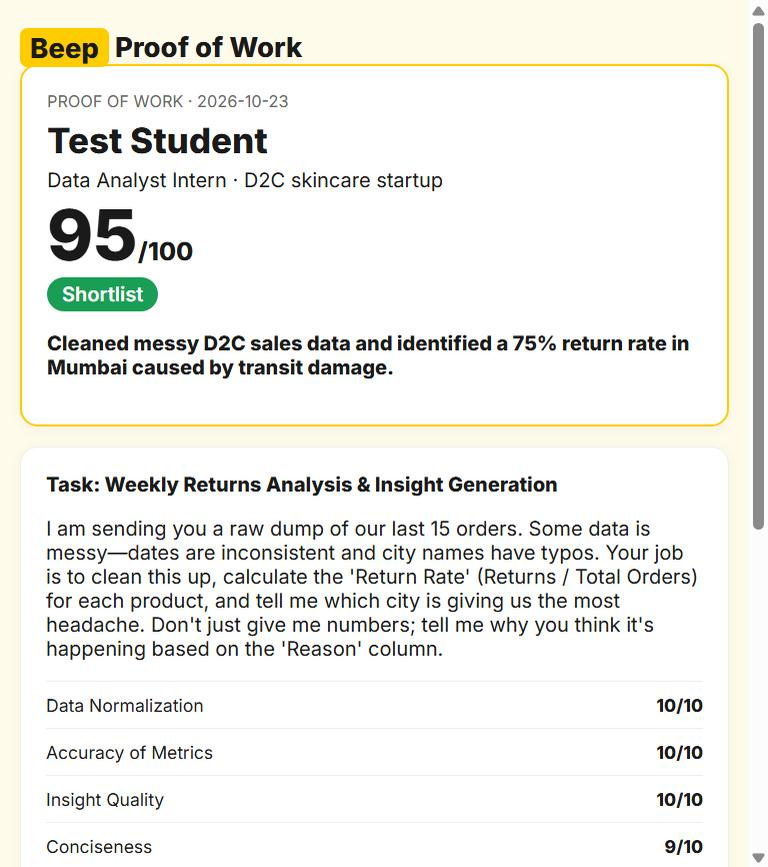

I read through Beep's Google Play reviews (4.0 stars, about 4,760 reviews, 694 of them 1 star) and looked for complaints that kept coming up. The three biggest ones are connected. A student comes to Beep to learn, get certified and get a job, and trust drops at each step.
1. The certificate does not really prove skill. The test before the paid certificate is short and basic, so neither students nor recruiters take it seriously.
"the assessment is based on only 6 basic questions, which may not accurately reflect a person's actual skill level" (Pooja Avasthi)
"The questions in the basic survey were too simple for me to pay Rs. 149" (Yashita Sharma)
2. Pricing feels unclear, and students are starting to call it fake. The price changes, students learn late that the certificate is paid, there are a lot of purchase prompts, and a 15 minute discount timer adds pressure.
"This is a fake app. They claimed a certificate for 199 rupees and then charged me 99 rupees, then asked for 149 rupees." (1 star, 5 October 2026)
"reducing frequent purchase prompts would also enhance the overall use" (Tamalika Ghosh)
3. After the certificate there is no clear way to a job.
"I am yet to find any opportunities even though the sample profile I created was very generic and relating to an industry which has plentiful jobs" (Hamza Agha, marked helpful by 37 people)
"the 'AI' tag is overhyped. Job suggestions are pretty basic... Some job listings are outdated too." (3 stars)
Something else I noticed: many 4 star reviews from early June 2026 follow the same pattern, and one even starts with "You can write:". It looks like a campus review drive, so the 4.0 rating probably makes users look happier than they are. That is why I gave more weight to the 1 star reviews.





Most people would build a quiz or a mock interview, but that is just a longer version of the 6 question test. What a recruiter really wants to know is whether the student can do the job. So I built something that produces proof of work.
| 1 | The student pastes any real internship post (Internshala, LinkedIn, Naukri or Beep). |
| 2 | The AI reads it like a hiring manager. It picks out the skills that matter and creates the actual first-week task for that role, with the data or brief included. |
| 3 | The student does the task in about 20 minutes. Hinglish is fine, because it grades the work and not the English. |
| 4 | The AI grades it against a rubric built from the job post. The student gets a score, a decision (Shortlist, Maybe or Not yet), the fixes to make first and a model answer. |
| 5 | The student gets a proof link to send with the application. The server signs it, so the recruiter sees "Verified by Beep", or a warning if anyone changed the score. |
How it covers the problems: it fixes problem 1 because it is real work and not 6 questions. It fixes problem 3 because every check starts from a real job and ends with a link to apply with. It helps problem 2 because Beep gives value before asking for money, and the paid certificate then sits on top of proof the student already has.
How Beep could ship it: put a "Prove it for this job" button on every internship listing, and show the proof link on the student's profile next to their certificates.

Main metric: application rate after a skill check, meaning the share of students who finish a task and then apply to that job with their proof link.
Target: at least 30% of students who finish a task copy or share their proof link. Students who get Shortlist or Maybe should apply at 1.5 times the rate of the current listing flow.
How we would know in 7 days: run an A/B test. Half of new users see the "Prove it" button and half see the normal flow. We track task created, work submitted, link shared and applied. The API already logs task and grade events. On day 7 we compare apply rates. As a guardrail, new 1 star reviews saying "fake" or "paid" should not go up.
Second number: certificate purchases among students who score Shortlist. A student who already has proof is a warm buyer.
Google Gemini 3 Flash powers the tool. It turns a job post into a task and rubric, then grades the work. If it is busy, the tool falls back to Gemini 3.1 Flash Lite.
Claude Code helped me collect the Play Store evidence and write the code.
Vercel hosts the page and a small server function, so the API key stays hidden and the proof links can be signed.
My workflow: (1) I read the Play Store reviews and grouped the complaints into 3 problems. (2) My first version was a quiz, but I dropped it because it was just a longer version of Beep's 6 question test. (3) I rebuilt it as proof of work, tested it with real job posts and a Hinglish answer, then checked that the AI's maths was right. (4) I added signed links after noticing that anyone could edit the score in the URL.
System prompt (sets the AI's role):
You are a hiring manager at an Indian company hiring interns/freshers, mostly from Tier 2/3 colleges. You judge WORK, not English. Students may write in Hinglish; never penalise language, only substance. Be honest and specific, never generic.
Prompt 1 (job post to task):
Here is a real internship/job post. 1. Extract the role and the 3 most important skills the post really needs. 2. Design ONE realistic work task this company's intern would get in week 1, doable in about 20 minutes with no paid tools. Include ALL material needed inline (a small messy data table, a product brief, a customer complaint, sample code). 3. Write the hidden grading rubric (4 criteria, each tied to a skill from the post). Reply in JSON.
Prompt 2 (grading):
Grade the student's submission strictly against the rubric, like a real hiring manager deciding whether to shortlist. Return a score out of 100, a decision (Shortlist, Maybe, Not yet), evidence for each rubric point, the best part, 3 fixes in order, a short model answer, apply advice, and one proof line a recruiter would read. Reply in JSON.
Asking for JSON lets the page show clean sections. After grading, the server builds the proof from its own result and signs it, so the student cannot change the score.